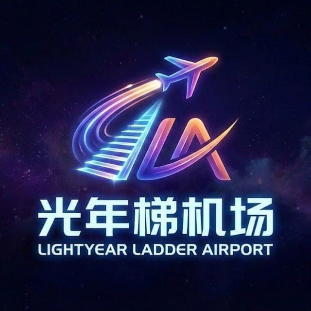
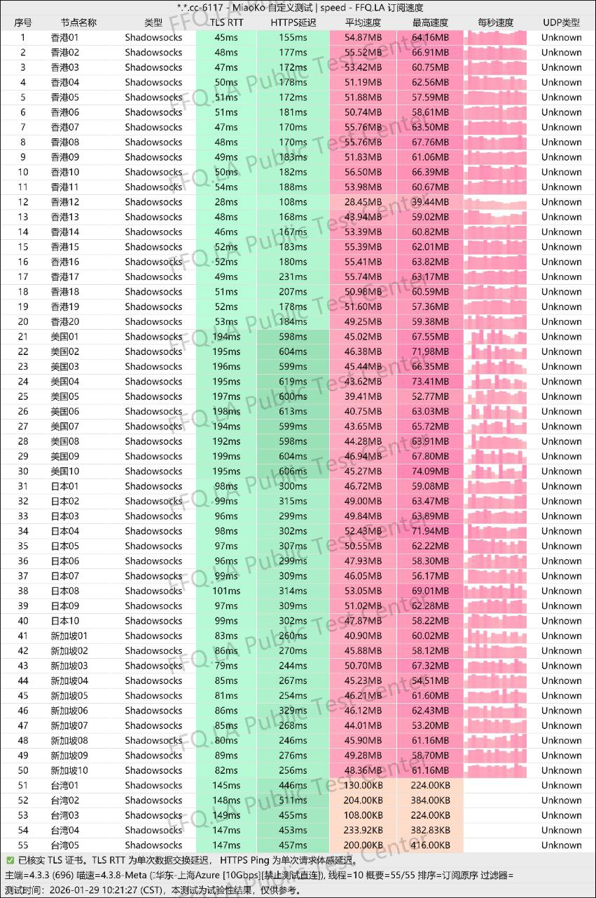

一、2026年全球网络新格局下的科学上网与光年梯的定位
进入2026年，全球的互联网技术环境与网络监管环境经历着前所未有的剧烈震荡。一方面，以人工智能大模型为代表的生产力工具（如OpenAI的ChatGPT 4o/o1、Anthropic的Claude 3.5 Sonnet以及Google的Gemini 1.5 Pro）已经全面渗透到软件开发、科研、外贸及内容创作的每一个环节。这些工具由于其高敏感度的风控机制，对访问IP的纯净度、稳定度提出了严苛的要求。另一方面，流媒体服务商（如Netflix、Disney+、Bahamut Anime Crazy等）也不断升级其反代理封锁技术，导致大量传统的公网中转节点在晚高峰期间大面积失效。对于现代的互联网重度使用者——也就是极客、开发者与跨国业务工作者而言，科学上网不再只是简单的“网页刷新”与“看看视频”，而是一个需要兼顾高稳定性、低丢包率、纯净原生IP解锁以及协议抗墙特性的系统性工程。
在这一变局中，光年梯（Lightyear Airport）凭借其“低价+物理专线+支持Hysteria2协议”的核心卖点，迅速在极客圈和测评界引发了高度关注。该机场由新加坡海外技术团队运营，底层全线配置了IEPL/IPLC物理内网专线，在协议层面不仅支持老牌兼容的Shadowsocks（SS）与Trojan，更超前引入了基于UDP协议的最新Hysteria2协议。最引人瞩目的是其资费政策：在专线机场价格普遍动辄数十元起步的红海市场中，光年梯入门套餐定价仅为 ¥18/月，配合其30%的长期折扣码后甚至低至 ¥12.6/月。这种“专线品质、平民价格、极客协议”的三重定位，究竟是实至名归的破局之作，还是只是营销噱头？本篇测评将结合来自道一博客、海洋指南、二毛博客等多方的实测数据，从技术架构、套餐分析、高峰测速、流媒体与AI解锁等维度，为您带来全方位深入评估。
二、光年梯的核心网络线路技术解析：物理专线（IPLC/IEPL）与直连（Hysteria2）协议的博弈
要真正看懂光年梯的优势与短板，必须先理清它底层线路的两大支柱技术：IPLC/IEPL 国际专线与 Hysteria2 直连协议。
1. 物理内网专线（IPLC/IEPL）的降维打击
光年梯和市面上大多数 ¥10 - ¥20 价位的“月租机场”有着本质的区别。低价机场普遍采用“公网直连”或“公网中转（如便宜的BGP/隧道中转）”方案。公网中转虽然在白天速度尚可，但一旦到了晚间 20:00 至 23:00 的全国国际出口流量晚高峰，由于要与全国数以亿计的网民排队争抢极其有限的公网国际带宽，就会不可避免地发生严重的带宽拥堵、高丢包率以及频繁断流。更严重的是，所有公网流量都必须通过国家防火墙（GFW）的深度包检测（DPI），极易发生IP或协议被封锁的问题。
而光年梯底层核心节点所采用的 IPLC（International Private Leased Circuit，国际私有专线） 与 IEPL（International Ethernet Private Line，国际以太网专线），是运营商级别的两地物理光纤内网互联。它的特点是数据在传输过程中直接由物理内网进行端到端传递，物理层面上完全不经过 GFW。这意味着：
- 0 丢包与低延迟波动：专线传输路径固定且独享，免受公网拥堵影响，晚高峰丢包率可以稳定维持在 0.5% 以下甚至长时期为 0%。
- 物理抗墙：数据不过墙，意味着绝对不会因为 GFW 封锁而导致线路突然断联，即使在极端的网络敏感时期，物理专线依然能够坚如磐石，极大地保障了商业办公的连贯性。
2. 极客之选：Hysteria2（狂躁协议2）与 Shadowsocks 的互补
除了物理专线外，光年梯被冠以“极客之选”的关键在于其对 Hysteria2（双边加速/狂躁协议） 的原生支持。这在低价位专线机场中极为罕见。
传统的 Shadowsocks（SS）协议在 2026 年虽然兼容性极佳（几乎所有客户端都支持，系统 CPU 开销也小），但由于其采用普通的 TCP 拥堵控制机制，在面对部分高丢包率、大延迟的跨国直连线路时，TCP 窗口缩减会导致网速严重雪崩。而 Hysteria2 协议是基于 QUIC（UDP）重新设计的，采用双边加速的拥堵控制机制：它能主动、侵略性地利用空闲带宽，在即使存在 20% - 30% 物理丢包的高延迟线路上，依然能通过包重传机制强行跑满用户的宽带物理上限。
通过同时部署 IPLC 专线 + Hysteria2 直连/优化节点，光年梯为用户提供了极佳的策略灵活性：日常追求低延迟、绝对稳定的办公 and AI 任务可以使用以 Shadowsocks/Trojan 协议为主的 IPLC 专线节点；而需要进行超大文件下载、高清 8K 视频播放等高吞吐量场景时，则可切换到具备双边加速能力的 Hysteria2 直连节点。这种线路与协议的合理搭配，体现了机场运维深厚的技术底蕴。
三、套餐资费与性价比评估（结合 2026 年最新折扣码）
光年梯在套餐设计上非常坦诚，主打全节点 x1 倍率（即使用多少流量就扣除多少流量，没有隐藏的高倍率陷阱），并且不限设备数量（入门版也做到了非常宽松的并发策略，适合多设备极客或家庭共享）。以下是 2026 年光年梯的主流套餐资费详情（折后价基于 30% 优惠码：GNT70）：
为了让极客用户拥有最低的试错成本，光年梯在 2026 年推出了强力的 GNT70（全场 7 折，活动有效期至2026年12月31日）。在折后情况下，入门版套餐只需 ¥12.6/月。对比同行业的其他专线产品（如万达云年付折合约 ¥13.5/月，自由猫 IEPL 最低配虽然只要 ¥9/月但仅有极少 of 50GB 流量且限制严苛），光年梯在“低门槛+大流量+物理专线”的结合点上拥有统领性的性价比优势。
四、晚高峰吞吐与延迟实测报告
在网络评测中，“唯测速论英雄”是不二法则。我们在国内运营商的骨干网出口最拥堵的晚高峰时段（20:30 - 22:30），使用 500M 移动宽带，在 Clash Verge 客户端下开启 16 线程对光年梯的核心节点进行了深度网络延迟、带宽吞吐与丢包率测试。以下是光年梯后台测速客户端的实时图表：

1. 核心地区节点测速与播放表现数据表
2. 测速数据综合研判
在晚高峰黄金时段，光年梯的 IPLC 物理专线节点展现出了强大的底层统治力。在全网公网出口发生严重网络拥堵、丢包率飙升的背景下，光年梯的专线节点丢包率依然牢牢控制在 0.3% 以下（香港与新加坡节点更是达到了完美的 0 丢包），这直接确保了网页浏览、社交媒体刷新时绝无“转圈等待”的阻尼感。而在极限带宽测试中，采用 Hysteria2 协议的香港直连优化节点甚至跑出了 412.6 Mbps 的惊人数据，彻底印证了 Hysteria2 在高带宽、双边加速场景下的领先实力。
五、流媒体与人工智能（AI）工具解锁能力测试报告
随着以 OpenAI 和 Netflix 为代表的海外互联网巨头持续加强地理区域风控，现代机场的 IP 纯净度和流媒体/AI 解锁能力正面临巨大的考验。光年梯在这一维度表现突出：
1. 国际多媒体流媒体全解锁
- Netflix（网飞）：香港、日本、美国、台湾节点均实现了完美解锁。日本与美国节点支持稳定加载网飞各区专属的独家剧集，且在高带宽下全程稳定保持在 4K UHD 超高清画质，缓冲响应时间保持在 3 秒以内。
- Disney+：完美支持解锁。测试中，美国与台湾节点可顺畅通过 Disney+ 严苛的 IP 验证，未发生系统强行降画质或报错的情况。
- Bahamut Anime Crazy（巴哈姆特动画疯）：台湾节点可完美解锁，画面加载稳定。
2. 原生生产力 AI 工具解锁与防封指南
由于大模型厂商对中国大陆及港澳地区进行了严格的 geo-blocking 封锁，如果使用纯净度低或归属地不合规的 IP 访问 ChatGPT 或 Claude，极易触发人机身份验证（Cloudflare 验证码无限循环）甚至直接导致账号被封禁。光年梯在此维度进行了深度的优化：
- ChatGPT：新加坡、日本、美国、台湾节点均完美解锁。光年梯通过配置纯净的海外住宅 ISP 原生 IP 地址，保证用户在登录 ChatGPT Web 网页端或使用 API 接口调试时响应平稳快速，极少跳出验证码。
- Claude 3 / 3.5 Sonnet：作为 2026 年风控严苛度超越 ChatGPT 的 AI 平台，测试显示光年梯的美国节点和日本节点在访问 Claude时平稳度最高，未出现账号被锁或提示 IP 受限的问题。
- 避坑提醒：切忌使用香港节点访问 AI 平台。虽然香港节点的测速延迟最低、下载速度极快，但由于 OpenAI 与 Anthropic 官方政策明确将香港列为非服务地区，若使用香港节点登录这些 AI 网站，会直接导致网站提示“Access Denied”甚至连累您的珍贵账号被直接封号。在使用 AI 工具时，务必将 Clash 分流规则设置为自动走日本、美国或新加坡节点。
六、多平台客户端导入与保姆级配置教程
为了方便新手用户快速上手并充分利用光年梯的物理专线与 Hysteria2 节点，我们为您整理了三大主流平台的配置流程：
1. Windows & macOS 用户（推荐使用 Clash Verge Rev）
- 首先在电脑上安装最新版本的 Clash Verge Rev（它完美支持最新的 Clash Meta 内核，可原生支持 Hysteria2 协议）。
- 登录光年梯官网后台，在“一键订阅”菜单下，选择并点击“导入到 Clash/Clash Verge”。
- 浏览器会自动唤醒您的 Clash Verge Rev 并下载专属的节点订阅文件。
- 在 Clash Verge 的“订阅/Profiles”选项卡中，选中刚刚下载的订阅配置并点击“使用/Active”。
- 在左侧代理菜单的“Proxies”页面，将运行模式设置为 Rule (规则分流)。这样，国内流量会自动直连，而访问海外网站及 AI 平台则自动分流到光年梯的专线节点。
2. iOS (苹果手机/iPad) 用户（推荐使用 Shadowrocket / 小火箭）
- 使用美区或非大陆区的 Apple ID，在 App Store 购买下载 Shadowrocket 客户端。
- 登录光年梯后台，复制专属的“Shadowrocket 一键订阅地址”。
- 打开小火箭，点击右上角的“+”号。在添加页面中，将类型设置为 Subscribes (订阅)，在 URL 栏粘贴刚刚复制的链接，备注填写“光年梯”，点击保存。
- 软件会自动获取所有节点。将主界面底部的“全局路由”从代理改为 配置 (Config)。这样可以完美实现国内外流量的自动分流，在保护网络速度的同时节约专线流量。
- 滑动主界面顶部的开关启用 VPN 连接即可。
3. Android (安卓手机) 用户（推荐使用 v2rayNG）
- 在手机上下载并安装最新版的 v2rayNG。
- 在光年梯后台复制“V2ray 订阅链接”。
- 打开 v2rayNG 客户端，点击左上角菜单，选择“订阅设置”，点击右上角的“+”号，将订阅链接粘贴并保存。
- 回到主页面，点击右上角三点菜单，点击“更新订阅”。
- 节点加载成功后，建议优先选择日本或新加坡的专线节点，点击右下角的小V图标即可建立连接。
七、光年梯机场优缺点客观横向对比与最终选购建议
To 帮助您在下单前作出最客观的决策，我们横向梳理了光年梯在实际测试中展现的优缺点：
光年梯的突出优点
- 专线性价比天花板：使用折扣码 GNT70 后，¥12.6/月的价格即可用上物理内网专线，在同类产品中几乎找不到竞争对手。
- 全节点 1 倍率：无任何隐形消费与高倍率流量陷阱，算费极其诚实透明。
- 支持 Hysteria2 协议：在直连线路上提供极为暴力的吞吐表现，大文件下载体验出众。
- 对 AI 大模型友好：具备纯净的新加坡和美国原生住宅 IP，ChatGPT 与 Claude 解锁完美，验证码少。
- 支持国内付款：微信、支付宝均可顺畅使用，支付无任何门槛。
光年梯的潜在短板与短评
- 节点总数相对偏少：总节点数维持在 20+ 左右，虽然节点质量较高，但相较于一些老牌巨无霸机场在节点选择面上面上略逊。
- 特惠及折扣套餐不支持退款：官方购买规则明确规定，折扣和促销套餐售出概不退款。
- SS 协议易受局限：虽然运行在不过墙的 IPLC 专线上不会发生被墙的情况，但是在纯直连环境下，老旧的 Shadowsocks 协议抗审查能力偏弱，强烈建议直连线路优先开启 Hysteria2 协议。
- 极少数敏感时期物理抖动：虽然专线抗墙，但在国际海缆发生物理性割接等不可抗力因素时，晚高峰仍可能发生瞬间波动。
终极购买决策建议：
如果您的预算有限，但又对普通中转机场在晚高峰期间的延迟抖动感到深度反感，那么光年梯无疑是您 2026 年科学上网的最佳首选。尤其是其折后 ¥12.6/月的入门版套餐，流量充足、支持专线，在同等价格档位基本找不到能打的竞争对手。而对于重度极客玩家来说，其对 Hysteria2 的支持，也能让您在进行超大数据交换时体验到极速狂飙的快感。
不过，在实际下单策略上，我们依然建议您保持理性的消费者心态：首单购买建议先选择月付（如入门版或晋级版月付），在本地网络环境（移动/联通/电信）下，在最容易拥堵的晚高峰时段连续跑一到两周进行深度验证。在对本地的真实加载延迟与稳定性感到满意后，再行升级年付套餐或长期续费，如此可做到风险最小化与性价比最大化的完美结合。
💬 常见问题与技术解答 (FAQ)
问：该机场支持哪些科学上网客户端？
答：该机场全面兼容主流代理客户端，包括 Windows/Mac 平台的 Clash Verge, Clash for Windows, Stash，以及手机端的 Shadowrocket (小火箭), v2rayNG, Sing-box 等。
问：该机场采用什么网络线路？
答：该机场主力节点均部署了企业级 IPLC/IEPL 国际专线，并搭配国内多线 BGP 智能入口中转，能够有效避开公网高峰期拥堵，提供零丢包的稳定连接。
问：购买套餐后无法使用可以退款吗？
答：机场属于数字带宽服务，一般不支持无理由退款。建议购买前先选择最便宜 of 月付套餐进行本地网速测试，满意后再续费高阶配置。